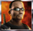
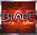
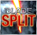

The object of Blade 50 Lines is to obtain a winning symbol combination by spinning the reels.
To play the game:- A wagering denomination (coin value) can be chosen by clicking the Click to Change denomination button in the lower left-hand corner of the screen.
- Line bets are chosen by clicking Bet per Line. Each click adds a coin to the line bet. When the maximum amount is reached (10 coins of the selected wagering denomination), clicking the button again resets the line bet to one coin.
- Paylines are chosen by clicking Lines. Each click activates more paylines in steps of multiples of 5, starting with 1 (1, 5, 10, 15, 20, 25, 30, 35, 40, 45, 50). When all paylines are activated, clicking the button again resets it to one active payline.
- Total bet per game round = line bet X active paylines.
- Clicking Spin spins the reels with the current selection of lines and line bets. During the reel spin the Spin button changes intoStop. Clicking Stop ends the spin animation and immediately displays the spin result.
- Reels can also be spun using the Auto Start function. Clicking + or – above Auto Start selects the number of spins to be played automatically. Clicking Auto Start spins the reels. The Auto Start button changes into Stop during the Auto Start mode. The Auto Start mode ends when the reels have been spun the number of times determined by the player, or when the player clicks Stop.
- Clicking the Turbo Mode button switches on or off the Turbo Mode thus turning on or off some of the win animations and sounds, and making the reels spin faster or slower.
- Wins are calculated according to the paytable. Line win = line bet X corresponding multiplier according to the paytable. Scatter win = total bet X corresponding multiplier according to the paytable. The paytable can be accessed via the Info page.
- On a given payline, only the highest payline winning combination pays while simultaneous winnings on different paylines are accumulated.
- In the case of a winning spin, the Win field displays the accumulating winnings. The Win ticker can be stopped by clicking anywhere on the screen to display the total win amount immediately.
- Payline wins and the total win are also displayed on the strip located at the bottom of the reels or the game window.
- Clicking Info opens the reference screen describing different game components. Clicking the arrow buttons at the lower right-hand corner of the screen enables navigating between the different info screens.
- The Paytable screen shows all winning combinations. When opened after a winning spin, the winning symbol combinations (number of symbols and bet multiplier) are highlighted and blink.
- The Free Games screen describes the symbol combinations necessary to trigger the Free Games feature and describes the Free Games feature rules.
- The Blade Symbol Split screen explains how the split feature is triggered as well as its behavior.
- The Marvel Multi-Level Mystery Progressive Jackpot screen describes how to win entry to the Marvel Multi-Level Mystery Progressive Jackpot game that wins one of 4 jackpots, and explains the rules of the game.
- Clicking Show Paylines opens a screen that illustrates all possible payline combinations. Clicking Hide Paylines closes this screen and returns to the Info screen.
- Clicking Back exits the Info screen and returns to the game.
- Active paylines are represented by lines that appear over the reels. Paylines can be activated and their shape displayed by progressively clicking Lines.
- Only active paylines can register wins.
- There is a difference between the line bet and the total bet. The line bet shows how much is being bet on a single payline. The total bet shows how much is being bet in total on the game round. Payouts shown in the paytable are multiplied by the line bet.
- Payouts are listed on the Paytable screen. To find the possible win amount, the line bet must be multiplied by the payout.
- If two payline winning combinations occur on the same line, the higher of them is paid out. If more than one active payline has a winning combination, the winnings are accumulated.
- Winning combinations must start from the leftmost reel, and the symbols have to be on consecutive reels.
The Wild symbol in the game is the  symbol. It can stand for any other symbol, except Scatter  and Split , to make the best possible winning combination.
There is also a separate payout for 2 or more Wild symbols on an active payline, as seen in the Paytable. This is paid out instead of the regular symbol win if the win amount from Wild is larger than the win from the regular symbols (by Wild standing in).
Scatter symbolsThe Scatter symbols do not have to occur on a particular payline. If there are 3 or more Scatter symbols in the spin results, the payout earned is multiplied by the total bet and added to payline winnings. The payout for the Scatter symbols is multiplied by the total bet. If 3 or more Scatter symbols appear on the reels simultaneously, regardless of position, 15 Free Games are awarded with a dynamic multiplier (see below). In Free Games, the Scatter symbol also serves as an Extra Wild and can stand for any other symbol, except for the Split symbol and the Wild symbol, to make the best possible winning combination. In Free Games, the words 'EXTRA WILD' appear on the symbol.
If 3 or more Scatter symbols appear anywhere on the reels during Free Games, the player is awarded 15 more Free Games.
Split symbolIf the Split symbol appears on the 5th reel after a spin, the last symbol in any winning combination will be split into 2 and will count as 2 identical symbols. All resulting wins will be paid. This means that combinations of 6 are possible. The payouts for the combinations of 6 are detailed in the paytable.
The Split feature is available in the main game and in Free Games. In the main game, all symbols except Scatter can be split. In Free Games, the Scatter symbol can be split when substituting as Extra Wild.
Free Games3 or more Scatter symbols trigger the Free Games. To begin, the player must click on Click to Start. Once the player clicks to start, a screen appears, granting the player a random initial multiplier of X2, X3, X4 or X5. A multiplier means that any win is multiplied by that number. The screen changes automatically to the Free Game reels, which then spin automatically.
During the Free Games, the line bet, coin size and number of lines are those last played.
The Free Games have multiplier steps of X2, X3, X4 and X5. If the player wins after a spin, the multiplier is increased by one step (X5 being the highest) and the wins are multiplied by that number. If there is no win after a spin, the multiplier decreases by one step (X2 being the lowest). The more lines are played, the greater chances the player has of a multiplier increase. During the Free Games, the Scatter symbol serves also as an Extra Wild, replacing all symbols except for the Split symbol and the Wild symbol.
At the end of the Free Games, a special screen detailing the feature wins appears. To return to the main game, click Continue.
Marvel Mystery JackpotMarvel Mystery Jackpot is a multi-level progressive jackpot game that is available in all Marvel games and is linked to all Marvel games. A small percentage of each bet in the Marvel games, by every person playing this game in each of many online casinos, is added to the progressive jackpot.
The trigger that starts the Jackpot game is random and can occur after any spin in any of the linked games. It is not caused by any symbol combination in the linked games and even a spin that does not win anything in the main game can trigger the Jackpot game. Likewise, any bet with any size in the linked games can trigger the Jackpot game. Nonetheless, the chances of triggering the Jackpot game increase or decrease proportionally to the bet size. Entering the Jackpot game guarantees a win of one of the four jackpots. Playing the Jackpot game reveals the jackpot that has been awarded to you, but does not determine it.
There are four different levels of jackpots that you can win: Power Jackpot, Extra Power Jackpot, Super Power Jackpot and Ultimate Power Jackpot. Different types of jackpots hold different prize amounts. The jackpot gamescreen contains 20 squares which in the beginning of the gameplay are turned upside down. Clicking on a square will turn it around and reveal one of four jackpot symbols on the other side. Once you have found three matching symbols, you win the jackpot that corresponds to these symbols. Jackpot winnings are added to the main game winnings (if any) and are displayed in the Win field together with any other winnings.
The Marvel Mystery Jackpot game has a timeout timer. This means that if you do not pick a square in a set amount of time, you will automatically receive your prize. The Jackpot for this game works like this:| Seed (how much money the Jackpots start out with): |
|
| Contribution rate (what percentage of each bet goes into Jackpot): | 0.99% |
| Win condition (the result you have to get to win the Jackpot): | Entering the jackpot game guarantees a win. Match 3 jackpot symbols of the corresponding Jackpot or wait for the timer to run out. |
| Win requirements (what you need to do to be eligible for the Jackpot): | Play a Marvel game. |
- The seed and Jackpot values are in Euros in the progressive network and their value in your local currency is dependent on the currency exchange rate.
- The mechanics of Marvel Mystery Jackpot prohibit simultaneous jackpot winnings.
- Imperfections in the Internet connectivity may cause you to experience delays in Jackpot messages or updates, but they do not affect actual Jackpot wins.
The theoretical percentage return to player (RTP) is 91.98%.